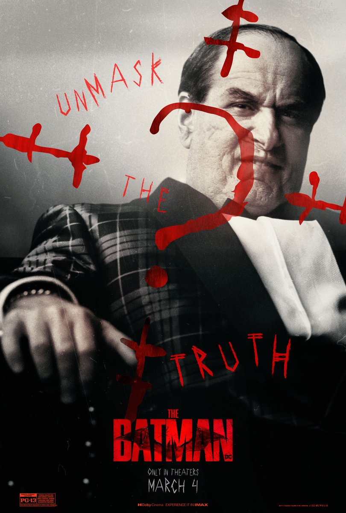
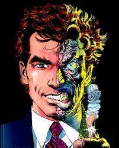
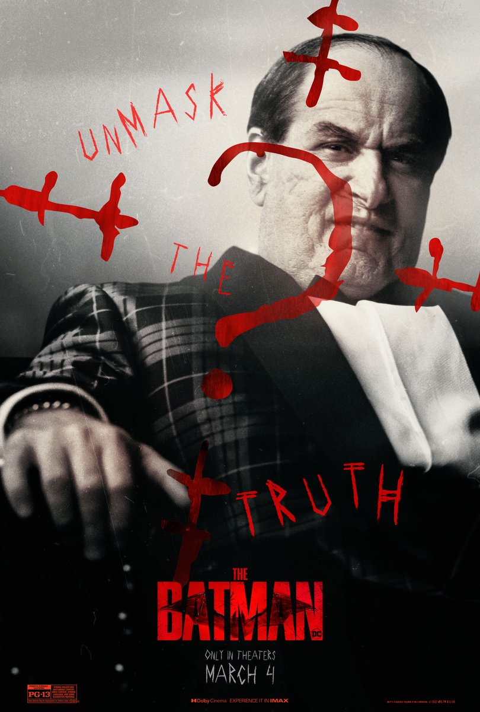
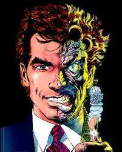
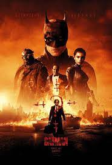
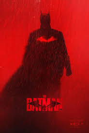

Vilões Batmam
 



Nessa semana, cobrimos a estréia do mais novo filme do Batmam, onde fomos convidados para apreciar mais uma estréia do mundo nerd.
O filme, apesar de sua longa duração de quase 3 horas, apela para uma linguagem mais investigativa, trazendo o espectador junto para a experiência de investigação que o filme traz como principal idéia. Assim, sendo uma ótima experiência para os fãs de filmes de investigação, sendo o filme Seven, uma das principais inspirações para a pelicula do morcego de gotham city.
Assitir a esse filme foi uma boa experiência para entrar em contato com sua criança anterior, com muita ação e ótimas atuações de um grande elenco!
Pra você que ainda que não conhece todos os vilões do morcego de Gotham, confira alguns principais vilões:
| Nome | 1a Aparicão nos Quadrinhos |
| Charada | 1948 |
| Pinguim | 1941 |
| Coringa | 1940 |
| Duas caras | 1942 |
Para aqueles que ficaram curiosos de ver o filme, segue o trailer legendado abaixo: